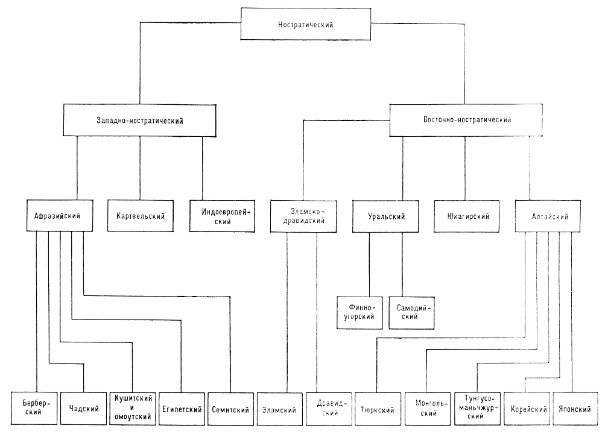

В самой формулировке вопроса кроется подвох, ведь языковая сложность — понятие относительное и трудноизмеримое. До недавнего времени лингвисты принимали за аксиому, что все языки одинаково сложны, а сейчас ученые могут с уверенностью сравнивать сложность только отдельных аспектов языка. Носителям разных языков разные иностранные языки кажутся простыми или сложными. Например, украинский может казаться легким вам, но не датчанину или китайцу. А вот изучение японского русскоговорящим часто кажется непосильной задачей, именно с этой точки зрения мы его и рассмотрим: с точки зрения трудностей для носителя русского языка.
В российском научном сообществе принято принимать гипотезу о происхождении японского языка, согласно которой японский принадлежит к алтайской языковой семье и родственен, например, корейскому, монгольскому и айнскому языкам. Не вдаваясь в подробности, скажу, что русский принадлежит к индо-европейской языковой семье, которая, по мнению некоторых исследователей, на языковом дереве встречается с алтайской только на уровне ностратической макросемьи. А ностратическая макросемья по некоторым оценкам распалась в 13 тыс. до н. э. То есть уже много тысячелетий мы с японцами в языковом смысле не родственники. Безусловно, и русский, и японский языки все это время заимствовали слова из других языков, но серьезно помочь изучающему японский могут разве что многочисленные японские заимствования из английского.

Схема ностратических языков из "Лингвистического энциклопедического словаря" (русский язык в индоевропейской семье).
Японская иероглифика была заимствована из Поднебесной, но в современной Японии в ходу намного меньше иероглифов, чем в Китае: японский школьный иероглифический минимум — 2136 иероглифов, китайский — 3500. Однако будущим японистам не стоит вздыхать с облегчением: помимо иероглифов в японском используются две слоговые азбуки по 46 знаков каждая. И латинский алфавит для аббревиатур, куда же без него.
Лингвисты любят классифицировать языки разными способами, один из них — классификация по базовому порядку слов в предложении, а именно по положению подлежащего (S - subject), сказуемого (V - verb) и прямого дополнения (O - object). В русском языке относительно свободный порядок слов, но нейтральным считается порядок SVO: "Мама мыла раму”. В японском языке базовый порядок слов SOV, то есть сказуемое всегда будет в конце предложения:
母が窓枠を洗った
Haha ga madowaku wo arat-ta
Мама ИМ. П. рама ВИН. П. мыть-ПРОШ. ВР.
'Мама мыла раму.'
Для русского языка характерен флективный строй. Словоизменение при таком строе осуществляется с помощью окончаний, совмещающих в себе сразу несколько значений (“син-ий”, окончание указывает на именительный падеж, единственное число и мужской род). Японский язык относится к агглютинативным языкам, в нем словоизменение чаще осуществляется с помощью аффиксов, каждый из которых имеет лишь одно значение и границы которых хорошо видны. Слово в агглютинативных языках уподобляется “паровозу с вагончиками”, и таких вагончиков может быть очень много:
食べたくなかった
tabe-ta-ku-na-katta
'Я/мы/он/она/они не хочу/хотим/хочет/хотят есть.'
taberu ('Я ем/Я буду есть')
tabetai ('Я хочу есть')
tabetakunai ('Я не хочу есть')
tabetakunakatta ('Я не хотел есть')
Это, несомненно, значимое отличие от флективных языков, но в агглютинативных языках намного меньше исключений, а правила построения словоформ достаточно прямолинейны. На мой взгляд, это сильно упрощает изучение грамматики.
В русском языке силовое ударение, при котором выделение слога происходит за счет усиления выдоха (грубо говоря, за счет повышения громкости). В японском же музыкальное ударение, при котором слог или несколько слогов выделяются высотой звука. А вот в тоновых языках (например, китайском) каждый слог имеет свой тон. Так что при изучении японского вам пригодится музыкальный слух 😃
Недостаточно просто знать необходимые выражения, нужно понять довольно отличную систему правил поведения, чтобы не использовать их ни к селу ни к городу. Хотя никакой откровенной поведенческой экзотики современный европеец в современной Японии не встретит, все же подстроиться под местные приличия бует непросто. К тому же, в японском есть отдельный пласт вежливой речи — кэйго — с детально прописанными правилами и строгой иерархией, в котором сами японцы часто путаются.